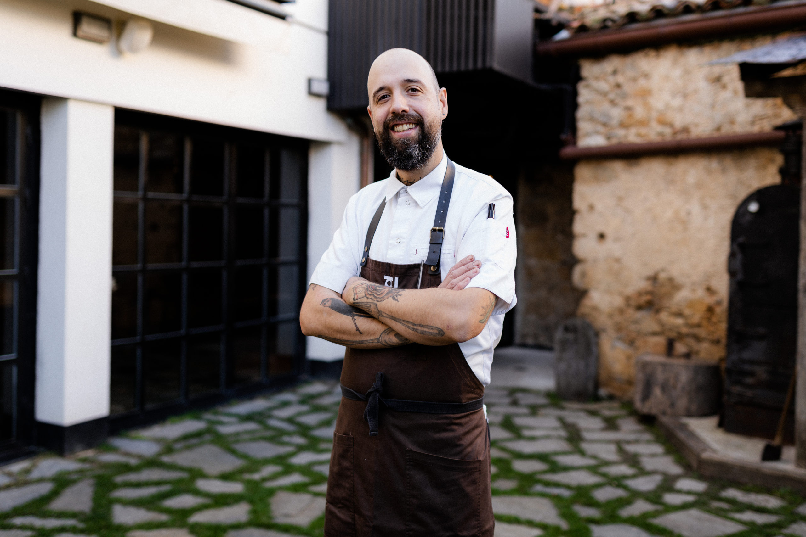
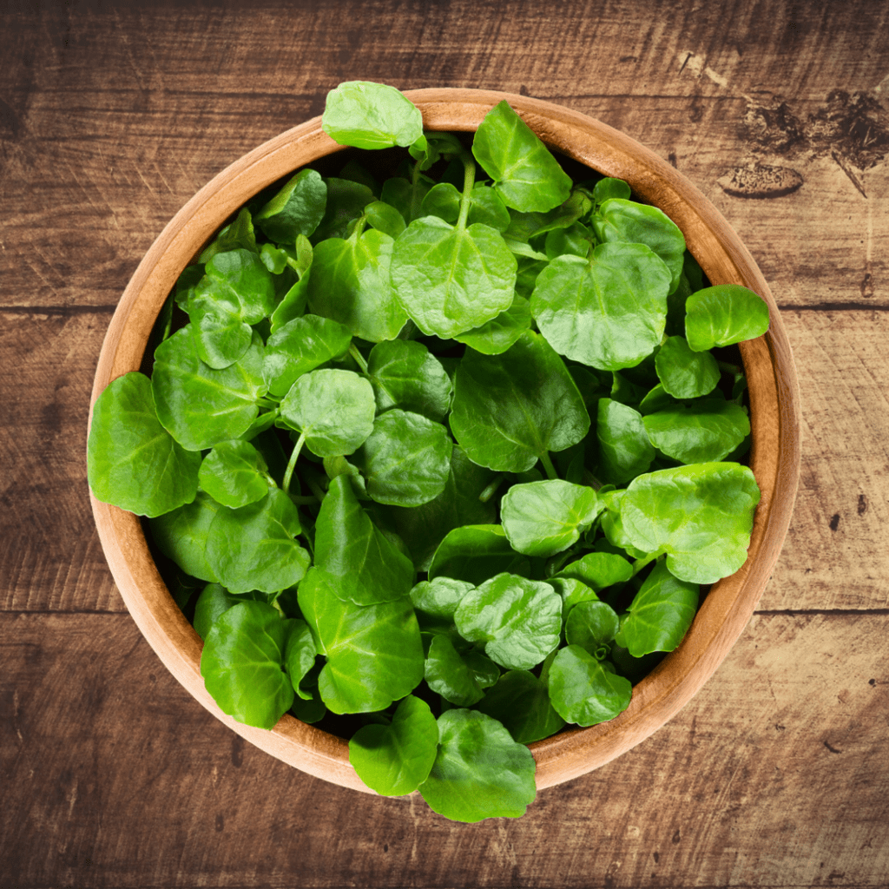

Jaime con solo una sartén. Nuevo programa de Jamie Oliver en Canal Cocina
No es tan importante dar bombo al hecho de cocinar en una sola sartén, pues hasta la paella se cocina en
un solo recipiente, pero si esto ayuda a que muchas personas se animen a cocinar y a disfrutar de la
comida casera, sea bienvenido, como lo es el nuevo programa de Jamie Oliver en Canal Cocina, según la
traducción al español, se titula: Jamie con solo una sartén.Ver más

Edorta Lamo, reciente estrella Michelin, en "Más Que Palabras"
Se han entregado esta semana los premios de la Guía Michelin, y el restaurante Arrea!, situado en Santa
Cruz de Campezo, Álava, ha recibido su primera estrella. En la sección 'Maestro Cocinero' de "Más Que
Palabras", Xabier Gutiérrez nos trae a Edorta Lamo y nos prepara unas yemas de Santa Teresa.Ver más

La 'superverdura' popular de la dieta canaria que tiene más vitamina C que la naranja
El berro, una verdura crucífera emparentada con la col, el brécol, el nabo, la coliflor y el rábano.
Aunque no sea tan típico en la península (donde se consume más que se cultiva) en Canarias es muy
famoso, de hecho, está muy presente en su gastronomía, así como en Italia, Francia, Dinamarca o
Inglaterra, con potajes cuyo centro es este vegetal.Ver
más